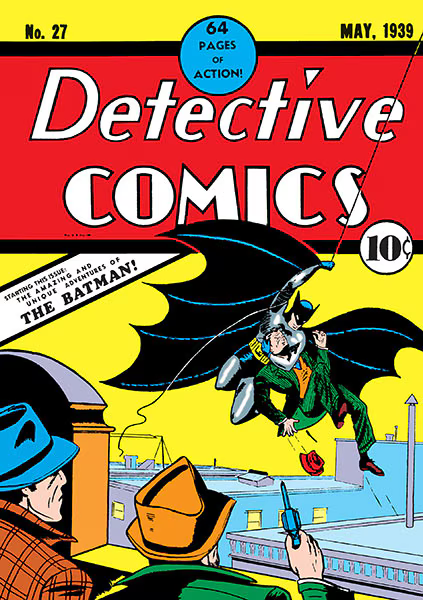
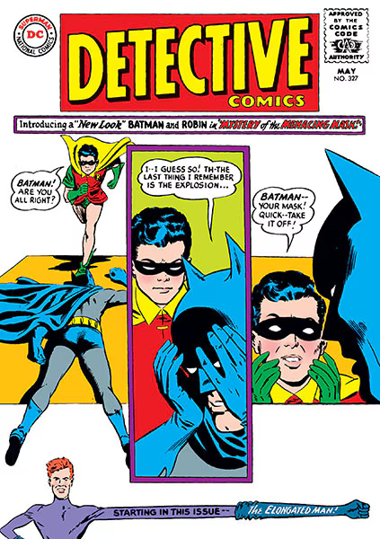
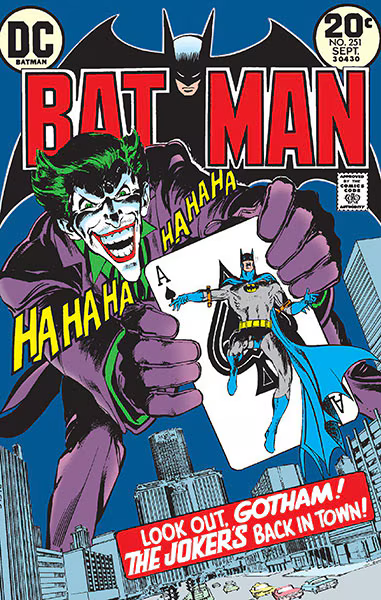
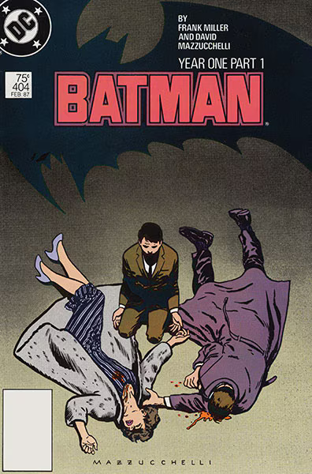
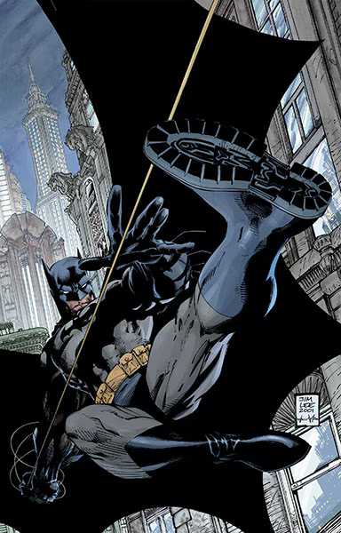
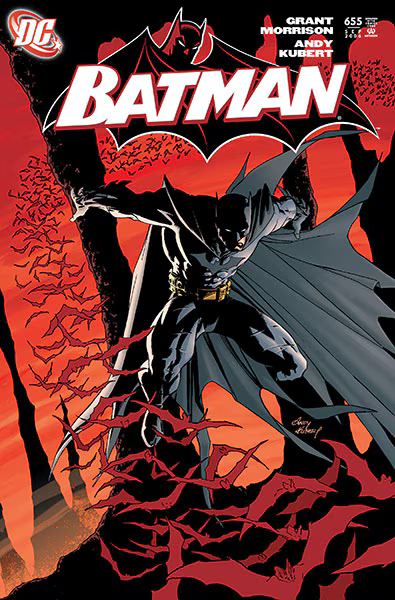
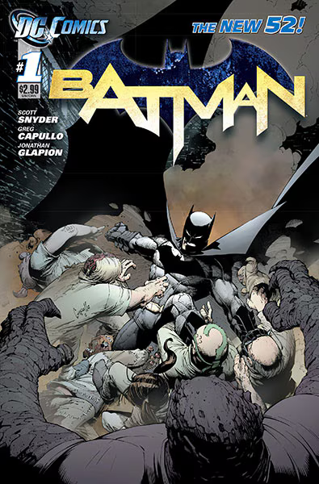
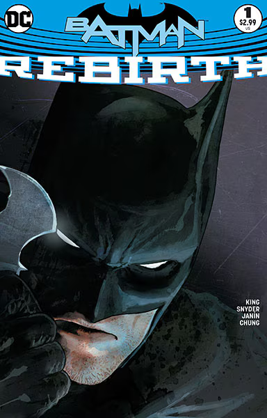

– Batman
In the heart of Gotham’s shadows, a legend was born—not of gods or aliens, but of a man forged by tragedy. After witnessing the murder of his parents in a cold alley, Bruce Wayne didn’t crumble—he transformed. Fueled by pain, trained to perfection, and armed with an unbreakable will, he became something more than a man… he became Batman. With no superpowers to rely on, Batman uses his mind as his greatest weapon. He’s a master detective, martial artist, strategist, and symbol of fear to those who prey on the innocent. The cowl is more than a mask—it’s a warning. From the crime-ridden streets of Gotham to the halls of the Justice League, the Caped Crusader stands alone—relentless, silent, unstoppable. His enemies are legendary: the maniacal Joker, the seductive Catwoman, the monstrous Bane, and dozens more. But none have ever truly broken the Bat. Over 80 years of stories, Batman has evolved from vigilante to global icon. He’s not just a superhero. He’s an idea—that courage, conviction, and a refusal to surrender can change the world.
THE GOLDEN AGE (1939-1956)
THE SILVER AGE (1956-1970)
THE BRONZE AGE (1970-1986)
"YEAR ONE" (1987)
THE MODERN AGE (1987-2005)
BATMAN AND SON (2006)
THE NEW 52 (2011-2016)
REBIRTH (2016-PRESENT)
